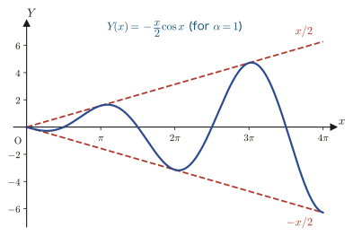

Chapter 38The Operator Method
In Chapters 36 and 37, to find a particular solution $Y$ of a linear differential equation with constant coefficients $\Phi(D)y=f(x)$, we used the method of undetermined coefficients (guess the form of $Y$ from the form of $f(x)$ and determine the coefficients) and variation of parameters (a universal method that always reaches the answer by using the fundamental solutions). Both are valid methods, but when $f(x)$ is an exponential function, $\sin$, or $\cos$—forms that appear overwhelmingly often in both engineering and physics—there is a more mechanical and faster method. That is the operator method of this chapter.
The idea is bold. We denote differentiation $\dfrac{d}{dx}$ by a single letter $D$, and we treat $D$ as a “quantity” that can be added, multiplied, and even (formally) divided, just like an ordinary number or algebraic expression. Then the equation $\Phi(D)y=f(x)$ looks just like the algebraic equation $\Phi(D)\cdot y = f(x)$, and a particular solution can be written as $y=\dfrac{1}{\Phi(D)}f(x)$ simply by “dividing both sides by $\Phi(D)$.” Of course, this is not mathematics unless we define carefully what $\dfrac{1}{\Phi(D)}$ means, but once it has been defined, we obtain a collection of formulas from which a particular solution is found just by substitution. This idea was first used in the late 19th century by the British electrical engineer Oliver Heaviside for calculations in electric circuits, and it is still used routinely today in circuit theory, mechanical vibrations, and control engineering.
- The definition of the differential operator $D$, and the algebraic properties that $D$ satisfies (linearity, commutativity of powers, $D^0=$ the identity operator)
- Defining the inverse operator $\dfrac{1}{D-\alpha}$ as “solving a first-order linear differential equation” (Formula 38.1)
- The substitution formula for exponential functions, $\dfrac{1}{\Phi(D)}e^{\alpha x}=\dfrac{1}{\Phi(\alpha)}e^{\alpha x}$ (Formula 38.2), and its power
- The shift theorem $\dfrac{1}{\Phi(D)}\{e^{\alpha x}f(x)\}=e^{\alpha x}\dfrac{1}{\Phi(D+\alpha)}f(x)$ (Formula 38.3)—a technique for pulling an exponential function out of the operator
- The formula for exponential functions when the characteristic root is a repeated root (resonance), $\dfrac{1}{(D-\alpha)^n}e^{\alpha x}=\dfrac{x^n}{n!}e^{\alpha x}$ (Formula 38.4)
- The substitution formulas for $\sin\alpha x,\ \cos\alpha x$ (Formula 38.5), and the special formulas for the case of “resonance,” where $\Phi(-\alpha^2)=0$ (Formula 38.6)
- The fact that, when resonance occurs, the amplitude of the solution grows without bound in proportion to $x$—the true mathematical nature of the resonance phenomena of bridges and swings
Source notes: Yasuhide Mochizuki, Mathematics Notes: Ordinary Differential Equations, pp. 45–50.
38.1 Why Study the Operator Method?—Definition of the Differential Operator $D$
Let us begin by defining the notation.
Definition 38.1: The differential operator $D$
The operation of differentiating a function $y$ with respect to $x$ is denoted by the symbol $D$ and written $D[y]$. That is, we define
$$ D[y] := \frac{dy}{dx} = y' \tag{38.1}\label{eq:38-Ddef} $$Similarly, we write the second derivative $\dfrac{d^2y}{dx^2}$ as $D^2[y]$ and the $n$th derivative $\dfrac{d^ny}{dx^n}$ as $D^n[y]$. From the definition, it follows immediately that
$$ D[y]=y',\qquad D^n[y]=y^{(n)} $$holds. This is only natural, since we have defined things so that “applying $D$ $n$ times in succession” means the same thing as “taking the $n$th derivative.”
Math Note: Where the letter $D$ comes from
$D$ is the initial letter of the English term Differential Operator. An operator is the general name for “a rule that takes in one function and returns another function,” and $D$ is its most basic example. If we feed $y=x^3$ into $D$, we get $D[x^3]=3x^2$ back—it is just like putting the number $2$ into a function $f$ and getting $f(2)$ back, except that this time all we have to do is think of both the “input” and the “output” as functions.
It will be convenient later to recast this $D$ in the language of linear algebra. Let $y_1$ be the collection of all differentiable functions and $y_2$ the collection of all continuous functions. Then $D$ can be regarded as the rule that sends a function $f(x)$ belonging to $y_1$ to its derivative $f'(x)$ belonging to $y_2$:
$$ D:\ y_1 \longrightarrow y_2,\qquad f(x)\ \longmapsto\ D[f(x)]=f'(x) $$Figure 38.1 depicts the action of $D$ using concrete functions.
That this correspondence “preserves addition and constant multiples of functions”—that is, $D[f+g]=D[f]+D[g]$ and $D[kf]=k\,D[f]$—will be confirmed in the next section, Section 38.2. In linear algebra, a correspondence with this property is called a linear map (linear maps themselves will be studied in earnest in Chapter 11). $D$ is the most basic example of “a linear map from a space of functions to a space of functions.”
Also, recall that the inverse operation of differentiation is integration. So we write the “inverse” of $D$ as $D^{-1}$ or $\dfrac{1}{D}$, and define it by
$$ D^{-1}[y] = \frac{1}{D}[y] := \int y\,dx \tag{38.2}\label{eq:38-Dinv} $$(we do not touch on the constant of integration on the right-hand side here; in the following sections we take the standpoint that it suffices to find a single particular solution, and so we use the case $C=0$). Similarly, we write
$$ D^{-n}[y] = \underbrace{\int\!\int\cdots\int}_{n\ \text{integrals}} y\,(dx)^n $$for integrating $n$ times.
Example 38.1: Checking the correspondence in Figure 38.1 directly
(a) Verify $D[x^2]=2x$ and $D[x^2+2]=2x$ separately. (b) For $x\gt0$, verify that $D[\ln x]=\dfrac{1}{x}$; conversely, find $D^{-1}\!\left[\dfrac{1}{x}\right]$ (with integration constant 0) and confirm that it agrees with the correspondence in Figure 38.1.
Solution. (a) $\dfrac{d}{dx}(x^2)=2x$. Also, $\dfrac{d}{dx}(x^2+2)=2x+0=2x$ (the derivative of a constant is 0). Hence $D[x^2]=D[x^2+2]=2x$ holds. Since $D$ cannot distinguish functions that differ by a constant, we see that it is not a one-to-one correspondence (it is not injective).
(b) For $x\gt0$ we have $\ln|x|=\ln x$, and $\dfrac{d}{dx}\ln x=\dfrac1x$, so by the definition $D[\ln x]=\dfrac1x$ holds. Conversely, we obtain
$$ D^{-1}\!\left[\frac1x\right]=\int\frac1x\,dx=\ln|x| $$(with integration constant 0), which corresponds exactly to the arrow “$\ln|x|\xrightarrow{D}\dfrac1x$” in Figure 38.1. From this one pair of correspondences as well, we can see that $D$ and $D^{-1}$ are operations inverse to each other.
38.2 Properties of Differential Operators
We confirm the four properties that justify treating $D$ “as in algebra.” As the original notes say, “This proof is not needed”: each of them is merely a translation into operator notation of the basic rules of differentiation learned in high school and in Chapter 1 (the derivative of a sum, the derivative of a constant multiple, and the interchange of the order of successive differentiations), so we omit the formal proofs and limit ourselves to adding a one-line explanation of why each holds.
Theorem 38.1: Properties of differential operators
Let $f(x),g(x)$ be functions that are differentiable as many times as necessary (for example, any number of times), let $k$ be a constant, and let $m,n$ be nonnegative integers.
$$ D[f(x)\pm g(x)] = D[f(x)] \pm D[g(x)] \tag{38.3}\label{eq:38-Dlinear1} $$ $$ D[k f(x)] = k\cdot D[f(x)] \qquad (k: \text{constant}) \tag{38.4}\label{eq:38-Dlinear2} $$ $$ D^n\big[D^m f(x)\big] = D^m\big[D^n f(x)\big] = D^{m+n}[f(x)] \tag{38.5}\label{eq:38-Dcomm} $$ $$ D^0[f(x)] = f(x) \tag{38.6}\label{eq:38-Dzero} $$Let us check them in order. Eq. \eqref{eq:38-Dlinear1} is just “the derivative of a sum is the sum of the derivatives,” $(f\pm g)'=f'\pm g'$, and Eq. \eqref{eq:38-Dlinear2} is just “the derivative of a constant multiple is the constant multiple of the derivative,” $(kf)'=kf'$, rewritten in the notation of $D$. Eq. \eqref{eq:38-Dcomm} says that differentiating $m$ times and then $n$ times, differentiating $n$ times and then $m$ times, and differentiating $m+n$ times from the start all arrive at the same function $f^{(m+n)}(x)$, in whichever order we compute. (Only the number of times we differentiate determines the result; the order in between does not matter. Note also that for this equality to make sense, $f$ must be differentiable at least $m+n$ times, so from here on we assume that every function we deal with can be differentiated any number of times.) Eq. \eqref{eq:38-Dzero} is the convention “differentiating zero times = doing nothing”; it is the equation that defines $D^0$ to be the identity operator (the operator that changes nothing).
Eq. \eqref{eq:38-Dlinear1} and Eq. \eqref{eq:38-Dlinear2}—“preserving sums” and “preserving constant multiples”—taken together are what we mean when we say that $D$ is linear. Thanks to this linearity, we can consider the polynomial in $D$
$$ \Phi(D) := a_n D^n + a_{n-1}D^{n-1} + \cdots + a_1 D + a_0 \qquad (a_0,\dots,a_n: \text{constant}) $$$\Phi(D)$ is again a linear map from $y_1$ (or, more broadly, from the collection of functions that can be differentiated any number of times) to a collection of functions, and the left-hand side of the constant-coefficient linear differential equation $\Phi(D)y=f(x)$ treated in this chapter is nothing other than the result of $\Phi(D)$ acting on $y$. For example, the second-order linear differential equation $y''+3y'+2y=f(x)$ can be written, with $\Phi(D)=D^2+3D+2$, as $\Phi(D)[y]=f(x)$.
Example 38.2: Checking the commutation rule with a concrete function
Let $f(x)=x^7$. Compute $D^2\big[D^3 f(x)\big]$, $D^3\big[D^2 f(x)\big]$, and $D^5[f(x)]$, and verify that all three agree, as Eq. \eqref{eq:38-Dcomm} says.
Solution. Differentiating $f(x)=x^7$ three times gives $D^3[x^7] = 7\cdot6\cdot5\,x^4 = 210x^4$. Differentiating this two more times gives
$$ D^2\big[D^3 f(x)\big] = D^2[210x^4] = 210\cdot4\cdot3\,x^2 = 2520x^2 . $$Next, differentiating $f(x)=x^7$ twice gives $D^2[x^7]=7\cdot6\,x^5=42x^5$. Differentiating this three more times gives
$$ D^3\big[D^2 f(x)\big] = D^3[42x^5] = 42\cdot5\cdot4\cdot3\,x^2 = 2520x^2 . $$Finally, differentiating five times from the start gives $D^5[x^7] = 7\cdot6\cdot5\cdot4\cdot3\,x^2 = 2520x^2$. Indeed, all three are equal to $2520x^2$, and Eq. \eqref{eq:38-Dcomm} is confirmed. In whichever order we differentiate, the result is determined solely by the total number of differentiations, that is, by “how many times we differentiated.”
38.3 The Inverse Operator $\dfrac{1}{D-\alpha}$—Reducing Particular Solutions to First-Order Linear Equations
At last we define the operation of “dividing by $\Phi(D)$.” What we want here is a rule that gives us one particular solution of the nonhomogeneous equation $\Phi(D)y=f(x)$ (the general solution is obtained, as you learned in Chapters 35–37, by adding to this particular solution the general solution of the homogeneous equation $\Phi(D)y=0$).
Definition 38.2: Inverse operator $\dfrac{1}{\Phi(D)}$
One function $Y$ satisfying $\Phi(D)Y=f(x)$ is written symbolically as
$$ Y = \frac{1}{\Phi(D)}[f(x)] $$That is, $\dfrac{1}{\Phi(D)}[f(x)]$ means “a function that returns to $f(x)$ when $\Phi(D)$ is applied to it,” and it is called the inverse operator of $\Phi(D)$. Since there are infinitely many $Y$ satisfying $\Phi(D)Y=f(x)$ (differing by solutions of the homogeneous equation), the convention is that $\dfrac{1}{\Phi(D)}[f(x)]$ denotes any one of them. Below, for specific $f(x)$, we will build formulas that let us compute this $Y$ by substitution alone.
The first case we treat is the most basic one, $\Phi(D)=D-\alpha$ (a polynomial of degree 1).
Formula 38.1 (Formula (3) of the original notes)
$$ \frac{1}{D-\alpha}[f(x)] = e^{\alpha x}\int e^{-\alpha x}\,f(x)\,dx \tag{38.7}\label{eq:38-inv1st} $$Derivation
Let $Y=\dfrac{1}{D-\alpha}[f(x)]$. By Definition 38.2, this means that $Y$ is a function satisfying
$$ (D-\alpha)[Y] = f(x) \qquad \cdots\text{①} $$Since $D[Y]=Y'$, Eq. ① can be rewritten as
$$ Y' - \alpha Y = f(x) \qquad \cdots\text{②} $$This is a first-order linear differential equation, and the method you learned in Chapter 33 can be used as it is. Regarding Eq. ② as being in the standard form $Y'+P(x)Y=Q(x)$ (with $P(x)=-\alpha$ and $Q(x)=f(x)$) and multiplying both sides by the integrating factor $\mu(x)=e^{\int P(x)dx}=e^{-\alpha x}$, we find that the left-hand side of
$$ e^{-\alpha x}Y' - \alpha e^{-\alpha x}Y = e^{-\alpha x}f(x) $$can be combined, by the product rule for differentiation, into $\left(e^{-\alpha x}Y\right)'$ (indeed, $\left(e^{-\alpha x}Y\right)' = -\alpha e^{-\alpha x}Y + e^{-\alpha x}Y'$ agrees with it). Hence, integrating both sides of
$$ \left(e^{-\alpha x}Y\right)' = e^{-\alpha x}f(x) $$with respect to $x$ gives
$$ e^{-\alpha x}Y = \int e^{-\alpha x}f(x)\,dx + C $$and multiplying both sides by $e^{\alpha x}$, we obtain
$$ Y = e^{\alpha x}\left\{\int e^{-\alpha x}f(x)\,dx + C\right\} $$What we want now is a particular solution; that is, it suffices to find just one function satisfying $\Phi(D)Y=f(x)$, so we may choose the integration constant to be $C=0$. Therefore
$$ Y = e^{\alpha x}\int e^{-\alpha x}f(x)\,dx \qquad \cdots\text{③} $$Substituting this into Eq. ① (that is, into $Y=\dfrac{1}{D-\alpha}[f(x)]$), we obtain Eq. \eqref{eq:38-inv1st}.
∎
Example 38.3: Trying out Formula \eqref{eq:38-inv1st} directly
Use Formula \eqref{eq:38-inv1st} to compute $\dfrac{1}{D-3}\big[e^{5x}\big]$. Then verify by direct substitution that the result is a particular solution of the differential equation $y'-3y=e^{5x}$.
Solution. Setting $\alpha=3$ and $f(x)=e^{5x}$ in Formula \eqref{eq:38-inv1st}, we obtain
$$ \frac{1}{D-3}\big[e^{5x}\big] = e^{3x}\int e^{-3x}\cdot e^{5x}\,dx = e^{3x}\int e^{2x}\,dx = e^{3x}\cdot\frac{1}{2}e^{2x} = \frac12 e^{5x} $$Here we took the integration constant to be 0. To check, we substitute $Y=\dfrac12 e^{5x}$ into $y'-3y$; since $Y'=\dfrac52 e^{5x}$, we get
$$ Y'-3Y = \frac52 e^{5x} - 3\cdot\frac12 e^{5x} = \left(\frac52-\frac32\right)e^{5x} = e^{5x} $$so it is indeed a particular solution of $y'-3y=e^{5x}$. In the next section we will see that, using Formula 38.2, we can reach this answer in an instant without carrying out the integral.
38.4 Substitution Formulas for Exponential Functions
Formula \eqref{eq:38-inv1st} is a formula for the case where $\Phi(D)$ is the polynomial $D-\alpha$ of degree 1, and moreover it requires us to carry out an integration every time. When $f(x)$ is the exponential function $e^{\alpha x}$ and $\Phi(D)$ is a general polynomial, there is an even faster formula that does not even require an integration.
Formula 38.2 (Formula (4) of the original notes)
Let $\Phi(D)=a_nD^n+a_{n-1}D^{n-1}+\cdots+a_1D+a_0$ (a polynomial with constant coefficients and $a_n\neq0$, written in the same notation as the one introduced immediately after Theorem 38.1), and suppose $\Phi(\alpha)\neq0$. Then
$$ \frac{1}{\Phi(D)}\cdot e^{\alpha x} = \frac{1}{\Phi(\alpha)}\cdot e^{\alpha x} \tag{38.8}\label{eq:38-expsub} $$Derivation
First, if we differentiate $e^{\alpha x}$ repeatedly with $D$, then by the differentiation formula for the exponential function $\dfrac{d}{dx}e^{\alpha x}=\alpha e^{\alpha x}$ we have
$$ D[e^{\alpha x}]=\alpha e^{\alpha x},\qquad D^2[e^{\alpha x}]=\alpha^2 e^{\alpha x},\qquad \dots,\qquad D^k[e^{\alpha x}]=\alpha^k e^{\alpha x} $$These relations hold (each time we differentiate, one factor of $\alpha$ simply comes down from the exponent to the front, so after $k$ repetitions we get $\alpha^k$). Therefore, when we apply $\Phi(D)=a_nD^n+a_{n-1}D^{n-1}+\cdots+a_1D+a_0$ to $e^{\alpha x}$, we can distribute it over the terms by the linearity in Theorem 38.1 (Eqs. \eqref{eq:38-Dlinear1} and \eqref{eq:38-Dlinear2}), which gives
$$ \begin{aligned} \Phi(D)\big[e^{\alpha x}\big] &= a_nD^n[e^{\alpha x}] + a_{n-1}D^{n-1}[e^{\alpha x}]+\cdots+a_1D[e^{\alpha x}]+a_0[e^{\alpha x}]\\ &= \left(a_n\alpha^n + a_{n-1}\alpha^{n-1} + \cdots + a_1\alpha + a_0\right)e^{\alpha x}\\ &= \Phi(\alpha)\cdot e^{\alpha x} \end{aligned} $$Here the last equality holds once we note that the value obtained by substituting $z=\alpha$ into the polynomial $\Phi(z)=a_nz^n+a_{n-1}z^{n-1}+\cdots+a_0$ is exactly the content of the parentheses (all we have to do is replace $D$ by $\alpha$, just as if it were a number—this is the heart of the formula. This argument holds for any value of the leading coefficient $a_n$ as long as it is not $0$, so there is no need to restrict $\Phi(D)$ to “leading coefficient 1”). That is, we have shown that $\Phi(D)[e^{\alpha x}]=\Phi(\alpha)e^{\alpha x}$. Noting that $\Phi(\alpha)$ is just a constant (a number that does not contain $x$), when $\Phi(\alpha)\neq0$ we divide both sides by $\Phi(\alpha)$ to get
$$ \frac{1}{\Phi(\alpha)}\Phi(D)\big[e^{\alpha x}\big] = e^{\alpha x} $$That is, $\dfrac{1}{\Phi(\alpha)}e^{\alpha x}$ is a particular solution of the equation $\Phi(D)Y=e^{\alpha x}$, so Eq. \eqref{eq:38-expsub} holds by Definition 38.2.
∎
Caution: This formula cannot be used when $\Phi(\alpha)=0$
Since the right-hand side of Eq. \eqref{eq:38-expsub} divides by $\Phi(\alpha)$, it cannot be used when $\Phi(\alpha)=0$—that is, when $\alpha$ is a root (characteristic root) of the characteristic equation $\Phi(\lambda)=0$ for the homogeneous equation $\Phi(D)y=0$ (we would be dividing by zero). Physically, this corresponds to resonance, in which the angular frequency of the forced vibration coincides with the natural frequency. The formula for this case will be taken up anew as Formula 38.4 (Section 38.6).
Example 38.4: Finding a particular solution at once with Formula \eqref{eq:38-expsub}
Use Formula \eqref{eq:38-expsub} to find a particular solution of the differential equation $y''-3y'+2y=e^{3x}$.
Solution. Here $\Phi(D)=D^2-3D+2$, so substituting $z=3$ into $\Phi(z)=z^2-3z+2$ gives $\Phi(3)=9-9+2=2\neq0$, and resonance does not occur. Hence Formula \eqref{eq:38-expsub} can be used as it stands, and
$$ Y = \frac{1}{\Phi(D)}\big[e^{3x}\big] = \frac{1}{\Phi(3)}e^{3x} = \frac12 e^{3x} $$is a particular solution. As announced at the end of Example 38.3, this was obtained without computing a single integral—merely by substituting $z=3$ into the polynomial $\Phi(z)=z^2-3z+2$. With the method of undetermined coefficients of Chapter 36, we would go through the procedure “set $Y=Ae^{3x}$, substitute, and solve the equation $(9-9+2)A=1$ for $A$ to get $A=\dfrac12$,” but Formula \eqref{eq:38-expsub} compresses that entire procedure into the single line “compute $\Phi(3)$.”
38.5 The Shift Theorem
Formula 38.2 (Eq. \eqref{eq:38-expsub}) can be used only when $f(x)$ on the right-hand side is exactly the exponential function $e^{\alpha x}$. What should we do, then, when another function $g(x)$ multiplies the exponential function, as in $f(x)=e^{\alpha x}g(x)$? For example, equations such as $y''-4y'+4y=xe^{2x}$ often appear in engineering as well (we treat this one in the next example, Example 38.5). What comes into play here is the shift theorem, which pulls the exponential function out of the operator.
Formula 38.3 (Formula (5) of the original notes): The shift theorem
$$ \frac{1}{\Phi(D)}\Big\{e^{\alpha x}f(x)\Big\} = e^{\alpha x}\left\{\frac{1}{\Phi(D+\alpha)}f(x)\right\} \tag{38.9}\label{eq:38-shift} $$Derivation
First, as practice, let us compute $D^n\{e^{\alpha x}g(x)\}$, where $g(x)$ is an arbitrary function (one that can be differentiated any number of times). Using the product rule, for $n=1$ we have
$$ D^1\{e^{\alpha x}g(x)\} = \alpha e^{\alpha x}g(x) + e^{\alpha x}\,D[g(x)] = e^{\alpha x}\big(D+\alpha\big)^1 g(x) $$(In this computation, the two contributions—“the part in which differentiating $e^{\alpha x}$ produces $\alpha$” and “the part in which we differentiate $g(x)$”—are combined into the form $(D+\alpha)g(x)$ by factoring out $e^{\alpha x}$.) Doing the same computation for $n=2$, we obtain
$$ D^2\{e^{\alpha x}g(x)\} = D\big\{e^{\alpha x}(D+\alpha)g(x)\big\} = \alpha e^{\alpha x}(D+\alpha)g(x) + e^{\alpha x}D(D+\alpha)g(x) = e^{\alpha x}(D+\alpha)(D+\alpha)g(x) = e^{\alpha x}(D+\alpha)^2g(x) $$Thus we see that we have merely applied the same transformation once more to the equation for $n=1$. Let us confirm, by mathematical induction, the conjecture that this computation can be repeated any number of times.
Let $k$ be an arbitrary natural number, and assume that
$$ D^k\{e^{\alpha x}g(x)\} = e^{\alpha x}(D+\alpha)^k g(x) \qquad \cdots(\ast_k) $$holds (the induction hypothesis). Then, applying $D$ once more to both sides of $(\ast_k)$, by exactly the same computation as in the case $n=1$ we obtain
$$ D^{k+1}\{e^{\alpha x}g(x)\} = D\Big\{e^{\alpha x}(D+\alpha)^kg(x)\Big\} = \alpha e^{\alpha x}(D+\alpha)^kg(x) + e^{\alpha x}D(D+\alpha)^kg(x) = e^{\alpha x}(D+\alpha)(D+\alpha)^kg(x) = e^{\alpha x}(D+\alpha)^{k+1}g(x) $$and so $(\ast_{k+1})$ holds. Since $(\ast_1)$ has already been verified above, by mathematical induction, for every natural number $n$ we have
$$ D^n\{e^{\alpha x}g(x)\} = e^{\alpha x}(D+\alpha)^n g(x) \tag{38.10}\label{eq:38-shift-power} $$Thus Eq. \eqref{eq:38-shift-power} holds.
So far we have verified the result for a single power $D^n$ of $D$. For a general polynomial $\Phi(D)=a_nD^n+a_{n-1}D^{n-1}+\cdots+a_1D+a_0$ as well, if we apply the linearity (Theorem 38.1) and Eq. \eqref{eq:38-shift-power} to each term, we have
$$ \begin{aligned} \Phi(D)\{e^{\alpha x}g(x)\} &= a_nD^n\{e^{\alpha x}g(x)\} + a_{n-1}D^{n-1}\{e^{\alpha x}g(x)\} + \cdots + a_0\{e^{\alpha x}g(x)\}\\ &= e^{\alpha x}\Big\{a_n(D+\alpha)^ng(x) + a_{n-1}(D+\alpha)^{n-1}g(x) + \cdots + a_0g(x)\Big\}\\ &= e^{\alpha x}\cdot\Phi(D+\alpha)\,g(x) \end{aligned} $$The last equality holds because the result of substituting $z=D+\alpha$ (an operator) into the polynomial $\Phi(z)=a_nz^n+\cdots+a_0$ coincides exactly with the content of the braces.
All that remains is to read this relation in the reverse direction. If we set $\Phi(D+\alpha)g(x)=f(x)$—that is, $g(x)=\dfrac{1}{\Phi(D+\alpha)}f(x)$—then the equality above can be written as
$$ \Phi(D)\left\{e^{\alpha x}\cdot\frac{1}{\Phi(D+\alpha)}f(x)\right\} = e^{\alpha x}f(x) $$This says nothing other than that “$e^{\alpha x}\dfrac{1}{\Phi(D+\alpha)}f(x)$ is a particular solution of the equation $\Phi(D)Y=e^{\alpha x}f(x)$,” so Eq. \eqref{eq:38-shift} follows from Definition 38.2.
∎
To sum up in a single sentence how to use Formula \eqref{eq:38-shift}: “when you find a factor $e^{\alpha x}$ inside $1/\Phi(D)$, you may take $e^{\alpha x}$ outside the operator and, in its place, replace every $D$ inside the operator by $D+\alpha$.”
Example 38.5: Handling products of a polynomial and an exponential function with the shift theorem
Use the shift theorem (Formula \eqref{eq:38-shift}) to compute $\dfrac{1}{(D-2)^2}\big[xe^{2x}\big]$.
Solution. Apply Formula \eqref{eq:38-shift} with $\Phi(D)=(D-2)^2$, $\alpha=2$, and $f(x)=x$. First we compute $\Phi(D+\alpha)=\Phi(D+2)=\big((D+2)-2\big)^2=D^2$ (note that when $D$ is replaced by $D+2$, the $-2$ and the $+2$ cancel each other). Therefore
$$ \frac{1}{(D-2)^2}\big[xe^{2x}\big] = e^{2x}\cdot\frac{1}{D^2}[x] $$All that remains is to compute $\dfrac{1}{D^2}[x]$, that is, to integrate $x$ twice (the $D^{-n}$ of Definition 38.1). Taking the constants of integration to be 0, we have
$$ \frac{1}{D^2}[x] = \int\!\!\int x\,(dx)^2 = \int\frac{x^2}{2}\,dx = \frac{x^3}{6} $$so the desired result is
$$ \frac{1}{(D-2)^2}\big[xe^{2x}\big] = \frac{x^3}{6}e^{2x} $$This means that a particular solution of the differential equation $y''-4y'+4y=xe^{2x}$ is $Y=\dfrac{x^3}{6}e^{2x}$ (we have directly confirmed, with the verification script at the end of the chapter, that $Y''-4Y'+4Y=xe^{2x}$).
38.6 Exponential Functions at Resonance
As noted in the Caution in Section 38.4, Formula 38.2 could not be used when $\Phi(\alpha)=0$—that is, when $\alpha$ is a root (characteristic root) of the characteristic equation $\Phi(\lambda)=0$. In this section, we use the shift theorem to find the formula for the most basic case of resonance, namely $\Phi(D)=(D-\alpha)^n$ ($\alpha$ is a characteristic root of multiplicity $n$) with the forcing term exactly $e^{\alpha x}$.
Formula 38.4 (Formula (6) of the original notes)
$$ \frac{1}{(D-\alpha)^n}\cdot e^{\alpha x} = \frac{x^n}{n!}\cdot e^{\alpha x} \tag{38.11}\label{eq:38-resonance-exp} $$Derivation
We use the shift theorem (Formula \eqref{eq:38-shift}) with $\Phi(D)=(D-\alpha)^n$ and $f(x)=1$ (the constant function). First,
$$ \Phi(D+\alpha) = \big((D+\alpha)-\alpha\big)^n = D^n $$holds (when $D$ is replaced by $D+\alpha$, the $-\alpha$ and the $+\alpha$ cancel exactly). Therefore, by Formula \eqref{eq:38-shift},
$$ \frac{1}{(D-\alpha)^n}\big[e^{\alpha x}\cdot1\big] = e^{\alpha x}\cdot\frac{1}{D^n}[1] $$All that remains is to compute $\dfrac{1}{D^n}[1]$, that is, to integrate the constant function $1$ a total of $n$ times. Taking all the constants of integration to be 0, we have
$$ \int 1\,dx = x,\qquad \int x\,dx = \frac{x^2}{2!},\qquad \int \frac{x^2}{2!}\,dx = \frac{x^3}{3!},\qquad \int \frac{x^3}{3!}\,dx = \frac{x^4}{4!},\qquad \dots $$and a pattern emerges—each integration raises the degree by one, and the factorial in the denominator also increases by one. Repeating this $n$ times gives
$$ \int \frac{x^{n-1}}{(n-1)!}\,dx = \frac{x^n}{n!} $$so $\dfrac{1}{D^n}[1] = \dfrac{x^n}{n!}$. Hence
$$ \frac{1}{(D-\alpha)^n}\cdot e^{\alpha x} = e^{\alpha x}\cdot\frac{x^n}{n!} = \frac{x^n}{n!}e^{\alpha x} $$is obtained.
∎
This means that the prescription of the method of undetermined coefficients that we learned in Chapters 36 and 37, “when resonance occurs, multiply the trial function by $x^n$”—the rule that when the characteristic root $\alpha$ has multiplicity $n$, we assume the particular solution has the form $Y=Ax^ne^{\alpha x}$—comes out automatically, from the side of the operator method, as the single formula \eqref{eq:38-resonance-exp}. The answer to “Why multiply by $x^n$?” can also be seen from the derivation: to resolve resonance at a root of multiplicity $n$, we must compute $1/D^n$ (= integrate $n$ times), and this produces exactly the factor $x^n/n!$.
Example 38.6: A particular solution when resonance occurs
Find a particular solution of the differential equation $y''-4y'+4y=e^{2x}$.
Solution. The characteristic equation is $\Phi(\lambda)=\lambda^2-4\lambda+4=(\lambda-2)^2=0$, and $\lambda=2$ (the value in the exponent of the forcing term) is a double root. That is, $\Phi(D)=(D-2)^2$ and $\Phi(2)=0$, so Formula 38.2 (Eq. \eqref{eq:38-expsub}) cannot be used; resonance is occurring. So we use Formula \eqref{eq:38-resonance-exp} with $\alpha=2$ and $n=2$, which gives
$$ Y = \frac{1}{(D-2)^2}\big[e^{2x}\big] = \frac{x^2}{2!}e^{2x} = \frac{x^2}{2}e^{2x} $$as a particular solution. For resonance at a root of multiplicity $n=1$, the factor is $x^1/1!=x$; for resonance at a double root, it is $x^2/2!=x^2/2$—in this way, Formula \eqref{eq:38-resonance-exp} automatically tells us the factor that corresponds to the multiplicity.
38.7 Substitution Formulas for Trigonometric Functions
The forcing terms $f(x)$ that appear most often after exponential functions are trigonometric functions such as $\sin\alpha x$ and $\cos\alpha x$—that is, periodically oscillating external forces. Here too, if $\Phi(D)$ is a polynomial $\Phi(D^2)$ consisting of even powers only of $D$ (that is, one that contains no odd powers such as $D,D^3,D^5,\dots$), a substitution formula in the same spirit as Formula 38.2 can be used.
Formula 38.5 (Formulas (7) and (8) of the original notes)
Let $\Phi(D^2)=a_nD^{2n}+a_{n-1}D^{2(n-1)}+\cdots+a_1D^2+a_0$, and suppose $\Phi(-\alpha^2)\neq0$. Then
$$ \frac{1}{\Phi(D^2)}\sin\alpha x = \frac{1}{\Phi(-\alpha^2)}\sin\alpha x \tag{38.12}\label{eq:38-sinsub} $$ $$ \frac{1}{\Phi(D^2)}\cos\alpha x = \frac{1}{\Phi(-\alpha^2)}\cos\alpha x \tag{38.13}\label{eq:38-cossub} $$Derivation (the case of $\sin\alpha x$)
Differentiating $\sin\alpha x$ twice, taking care with the signs, we get
$$ D^2(\sin\alpha x) = \frac{d^2}{dx^2}\sin\alpha x = \frac{d}{dx}\big(\alpha\cos\alpha x\big) = -\alpha^2\sin\alpha x $$That is, “hitting $\sin\alpha x$ once with $D^2$ gives back $\sin\alpha x$ itself, multiplied by $-\alpha^2$”—$D^2$ behaves just as if it were merely multiplication by the number $-\alpha^2$—and this is the heart of the formula. If we repeat this operation once more,
$$ D^4(\sin\alpha x) = (D^2)^2(\sin\alpha x) = (-\alpha^2)^2\sin\alpha x $$and if we repeat it $n$ times,
$$ D^{2n}(\sin\alpha x) = (-\alpha^2)^n\sin\alpha x $$holds (each time $D^2$ acts, the function is multiplied by one more factor of $-\alpha^2$, so after $n$ times we get $(-\alpha^2)^n$). Using this relation, when we apply $\Phi(D^2)=a_nD^{2n}+a_{n-1}D^{2(n-1)}+\cdots+a_1D^2+a_0$ to $\sin\alpha x$, linearity (Theorem 38.1) gives
$$ \begin{aligned} \Phi(D^2)\sin\alpha x &= a_nD^{2n}(\sin\alpha x) + a_{n-1}D^{2(n-1)}(\sin\alpha x) + \cdots + a_1D^2(\sin\alpha x) + a_0\sin\alpha x\\ &= \Big\{a_n(-\alpha^2)^n + a_{n-1}(-\alpha^2)^{n-1} + \cdots + a_1(-\alpha^2) + a_0\Big\}\sin\alpha x\\ &= \Phi(-\alpha^2)\sin\alpha x \end{aligned} $$(the last equality holds because the value obtained by substituting $z=-\alpha^2$ into the polynomial $\Phi(z)=a_nz^n+\cdots+a_0$ coincides with the contents of the braces). When $\Phi(-\alpha^2)\neq0$, dividing both sides by $\Phi(-\alpha^2)$ shows that $\dfrac{1}{\Phi(-\alpha^2)}\sin\alpha x$ is a particular solution of $\Phi(D^2)Y=\sin\alpha x$, and Eq. \eqref{eq:38-sinsub} is obtained.
∎
Derivation (the case of $\cos\alpha x$)
For $\cos\alpha x$ as well, we can follow exactly the same steps from the beginning. Differentiating $\cos\alpha x$ twice gives
$$ D^2(\cos\alpha x) = \frac{d^2}{dx^2}\cos\alpha x = \frac{d}{dx}\big(-\alpha\sin\alpha x\big) = -\alpha^2\cos\alpha x $$(exactly the same form as for $\sin\alpha x$—hitting it once with $D^2$ gives back the function itself, multiplied by $-\alpha^2$). If we repeat this operation once more,
$$ D^4(\cos\alpha x) = (D^2)^2(\cos\alpha x) = (-\alpha^2)^2\cos\alpha x $$and if we repeat it $n$ times,
$$ D^{2n}(\cos\alpha x) = (-\alpha^2)^n\cos\alpha x $$holds. Using this relation, when we apply $\Phi(D^2)=a_nD^{2n}+a_{n-1}D^{2(n-1)}+\cdots+a_1D^2+a_0$ to $\cos\alpha x$, linearity (Theorem 38.1) gives
$$ \begin{aligned} \Phi(D^2)\cos\alpha x &= a_nD^{2n}(\cos\alpha x) + a_{n-1}D^{2(n-1)}(\cos\alpha x) + \cdots + a_1D^2(\cos\alpha x) + a_0\cos\alpha x\\ &= \Big\{a_n(-\alpha^2)^n + a_{n-1}(-\alpha^2)^{n-1} + \cdots + a_1(-\alpha^2) + a_0\Big\}\cos\alpha x\\ &= \Phi(-\alpha^2)\cos\alpha x \end{aligned} $$(the last equality holds because the value obtained by substituting $z=-\alpha^2$ into the same polynomial $\Phi(z)=a_nz^n+\cdots+a_0$ as before coincides with the contents of the braces). When $\Phi(-\alpha^2)\neq0$, dividing both sides by $\Phi(-\alpha^2)$ shows that $\dfrac{1}{\Phi(-\alpha^2)}\cos\alpha x$ is a particular solution of $\Phi(D^2)Y=\cos\alpha x$, and Eq. \eqref{eq:38-cossub} is obtained.
∎
As you can see, the proof is complete simply by carrying the argument for the case of $\sin\alpha x$ over, line by line, to $\cos\alpha x$. So from now on, whenever we meet such a situation—where “simply replacing $\sin$ by $\cos$ lets the argument go through unchanged”—we will settle it with a single remark, as a way of remembering the result.
Math Note: How to remember the formulas (from the “Point” box in the original notes)
The formulas \eqref{eq:38-sinsub} and \eqref{eq:38-cossub} are best remembered as follows: integrating $\sin\alpha x$ (or $\cos\alpha x$) twice, with the constants of integration taken to be 0, gives $-\dfrac{1}{\alpha^2}\sin\alpha x$ (or $-\dfrac{1}{\alpha^2}\cos\alpha x$). This is the special case of Formula \eqref{eq:38-sinsub} with $\Phi(D^2)=D^2$ (that is, $n=1,a_1=1,a_0=0$); since $\Phi(-\alpha^2)=-\alpha^2$, it corresponds to $\dfrac{1}{D^2}\sin\alpha x = -\dfrac{1}{\alpha^2}\sin\alpha x$. If you remember it as “$D^2$ turns into $-\alpha^2$, and $1/D^2$ (= integrating twice) turns into $-1/\alpha^2$,” this gives you a clue for recalling the formulas \eqref{eq:38-sinsub} and \eqref{eq:38-cossub}.
Example 38.7: When a periodic external force acts on the equation of simple harmonic motion
Suppose the equation of motion of a system consisting of a mass and a spring is given by $y''+4y=\sin3x$ (and $y''+4y=\cos3x$) (here $y$ is the displacement, $4=\omega_0^2$ is the square of the natural angular frequency of the system, and the right-hand side is an external force of angular frequency 3). Find a particular solution in each case.
Solution. We have $\Phi(D^2)=D^2+4$, that is, $\Phi(z)=z+4$. The angular frequency of the external force is $\alpha=3$, and $\Phi(-\alpha^2)=\Phi(-9)=-9+4=-5\neq0$, so resonance does not occur.
(a) For $y''+4y=\sin3x$, by Formula \eqref{eq:38-sinsub},
$$ Y = \frac{1}{\Phi(-9)}\sin3x = \frac{1}{-5}\sin3x = -\frac15\sin3x $$(b) For $y''+4y=\cos3x$, by Formula \eqref{eq:38-cossub}, similarly $Y=-\dfrac15\cos3x$.
In both cases, the frequency of the external force ($\alpha=3$) does not coincide with the natural frequency of the system ($\sqrt4=2$), so the amplitude of the response, $\left|-\dfrac15\right|=\dfrac15$, does not grow as time goes on, and the system keeps oscillating with constant amplitude. We will see what happens in the case of “resonance,” where the frequencies do coincide, in the next section, Section 38.8.
38.8 Trigonometric Functions at Resonance
Formula 38.5 (Eqs. \eqref{eq:38-sinsub}, \eqref{eq:38-cossub}) came with the condition $\Phi(-\alpha^2)\neq0$. When, as with $\Phi(D^2)=D^2+\alpha^2$, the equation itself describes a simple harmonic motion of angular frequency $\alpha$ and the angular frequency of the external force is also exactly $\alpha$, we get $\Phi(-\alpha^2)=-\alpha^2+\alpha^2=0$, and Formula 38.5 can no longer be used. This is the trigonometric version of resonance. In this section we derive the formulas that give the particular solution in that case.
Formula 38.6 (Formulas (9) and (10) of the original notes)
$$ \frac{1}{D^2+\alpha^2}\sin\alpha x = -\frac{x}{2\alpha}\cos\alpha x \tag{38.14}\label{eq:38-res-sin} $$ $$ \frac{1}{D^2+\alpha^2}\cos\alpha x = \frac{x}{2\alpha}\sin\alpha x \tag{38.15}\label{eq:38-res-cos} $$Caution: The original notes do not contain proofs of these two formulas
The original notes (pp. 49–50) contain Formulas (9) and (10) themselves and the remark “a formula for when (7) (or (8)) cannot be used! (when $\Phi(-\alpha^2)=0$)”, but right after the word “Evidence…” the margin is left blank, and the notes move on to the next page without writing out a proof. In this book, therefore, we derive these two formulas on our own by combining the shift theorem (Formula 38.3) and the substitution formula for exponential functions (Formula 38.2) learned so far—together with Euler's formula, which we used in Chapter 35 when we dealt with complex solutions.
Why bring in complex numbers?
Since $\sin\alpha x$ and $\cos\alpha x$ are real-valued functions, you may wonder why we go out of our way to bring in the complex number $i=\sqrt{-1}$. The reason is that, using Euler's formula (which appeared in Chapter 35 when we dealt with complex solutions)
$$ e^{i\theta} = \cos\theta + i\sin\theta $$we can treat both $\sin,\cos$ at once as just one exponential function $e^{i\alpha x}$. The exponential function comes with the powerful tools of Formula 38.2 and Formula 38.3, whereas $\sin,\cos$ turn into each other when differentiated and are hard to handle on their own. So we adopt the following strategy: “escape once into the world of complex numbers, finish the computation with the formulas for exponential functions, and at the end take the real and imaginary parts to return to the real world (the world of real numbers).”
Derivation
Step 1: Why we may compute with complex numbers. $\Phi(D)=D^2+\alpha^2$ is an operator with real coefficients. If $u(x),v(x)$ are real-valued functions, differentiation acts independently on the real part and the imaginary part, so
$$ \Phi(D)[u+iv] = \Phi(D)[u] + i\,\Phi(D)[v] $$holds, and moreover $\Phi(D)[u],\ \Phi(D)[v]$ are both real-valued functions (applying an operator with real coefficients to a real-valued function never produces a complex number). Therefore, if we find that $\Phi(D)[u+iv]=p(x)+iq(x)$ ($p,q$ real-valued functions), then comparing the real parts and the imaginary parts of both sides, we learn simultaneously that
$$ \Phi(D)[u]=p(x), \qquad \Phi(D)[v]=q(x) $$From this, the real part and the imaginary part of the result of “substituting” $e^{i\alpha x}=\cos\alpha x+i\sin\alpha x$ into $\Phi(D)$ give us the answers for $\cos\alpha x,\sin\alpha x$ at the same time.
Step 2: Reducing to $D(D+2i\alpha)$ by the shift theorem. Note that $D^2+\alpha^2=(D-i\alpha)(D+i\alpha)$ (it factors over the complex numbers). Indeed, expanding the right-hand side gives $(D-i\alpha)(D+i\alpha)=D^2-(i\alpha)^2=D^2-i^2\alpha^2=D^2+\alpha^2$ (using $i^2=-1$), which agrees with the left-hand side—this is nothing but the factoring formula $a^2-b^2=(a-b)(a+b)$ learned in high school, applied as it is over the complex numbers with $a=D$, $b=i\alpha$. With this factorization in mind, if we apply Formula \eqref{eq:38-shift} with $\alpha_{\text{shift}}=i\alpha$ and $f(x)=1$, we get
$$ \Phi(D+i\alpha) = \big((D+i\alpha)-i\alpha\big)\big((D+i\alpha)+i\alpha\big) = D(D+2i\alpha) $$so that
$$ \frac{1}{D^2+\alpha^2}\big[e^{i\alpha x}\big] = e^{i\alpha x}\cdot\frac{1}{D(D+2i\alpha)}[1] $$holds (in the derivations of Formulas 38.2 and 38.3 we never once used the fact that the coefficients or the exponents are real, so the formulas remain valid as they stand even for the complex number $i\alpha$).
Step 3: Computing $\dfrac{1}{D(D+2i\alpha)}[1]$ in order from the right. Since $\dfrac{1}{D(D+2i\alpha)}=\dfrac1D\cdot\dfrac{1}{D+2i\alpha}$, we first compute the inner part $\dfrac{1}{D+2i\alpha}[1]$. Regarding $1=e^{0\cdot x}$ and using Formula 38.2 (Eq. \eqref{eq:38-expsub}), we have $\Phi_1(D)=D+2i\alpha$ and $\Phi_1(0)=2i\alpha\neq0$, so we obtain the constant
$$ \frac{1}{D+2i\alpha}[1] = \frac{1}{2i\alpha} $$Next, integrating this constant by means of $D^{-1}$ (Definition 38.1), with the constant of integration taken to be 0, we get
$$ \frac{1}{D}\left[\frac{1}{2i\alpha}\right] = \int\frac{1}{2i\alpha}\,dx = \frac{x}{2i\alpha} $$Hence $\dfrac{1}{D(D+2i\alpha)}[1]=\dfrac{x}{2i\alpha}$, and therefore
$$ \frac{1}{D^2+\alpha^2}\big[e^{i\alpha x}\big] = \frac{x}{2i\alpha}\,e^{i\alpha x} $$is obtained.
Step 4: Separating into real and imaginary parts. Using $\dfrac{1}{i}=-i$, we have $\dfrac{1}{2i\alpha}=-\dfrac{i}{2\alpha}$, so
$$ \begin{aligned} \frac{x}{2i\alpha}e^{i\alpha x} &= -\frac{ix}{2\alpha}\big(\cos\alpha x+i\sin\alpha x\big)\\ &= -\frac{ix}{2\alpha}\cos\alpha x - \frac{i^2x}{2\alpha}\sin\alpha x\\ &= \frac{x}{2\alpha}\sin\alpha x \ -\ i\,\frac{x}{2\alpha}\cos\alpha x \end{aligned} $$(using $i^2=-1$). That is, $\dfrac{1}{D^2+\alpha^2}[e^{i\alpha x}] = u(x)+iv(x)$, with real part $u(x)=\dfrac{x}{2\alpha}\sin\alpha x$ and imaginary part $v(x)=-\dfrac{x}{2\alpha}\cos\alpha x$. Combining the fact confirmed in Step 1—“the real part and the imaginary part are each a solution for the corresponding forcing term”—with $e^{i\alpha x}=\cos\alpha x+i\sin\alpha x$ (real part $\cos\alpha x$, imaginary part $\sin\alpha x$), we obtain
$$ \Phi(D)[u(x)] = \cos\alpha x \ \Longrightarrow\ \frac{1}{D^2+\alpha^2}\cos\alpha x = \frac{x}{2\alpha}\sin\alpha x $$ $$ \Phi(D)[v(x)] = \sin\alpha x \ \Longrightarrow\ \frac{1}{D^2+\alpha^2}\sin\alpha x = -\frac{x}{2\alpha}\cos\alpha x $$These are exactly Eqs. \eqref{eq:38-res-sin}, \eqref{eq:38-res-cos}.
∎
Note that on the right-hand sides of Eqs. \eqref{eq:38-res-sin}, \eqref{eq:38-res-cos} there appear not $\cos\alpha x,\sin\alpha x$ themselves but $x\cos\alpha x,\ x\sin\alpha x$, multiplied by $x$. While $|\cos\alpha x|\le1,\ |\sin\alpha x|\le1$ merely oscillate and never grow, $x$ becomes arbitrarily large as $x\to\infty$. In other words, when resonance occurs, the amplitude of the particular solution grows without bound, in proportion to time ($x$). Let us look at this in the language of physics.
Physical meaning: Resonance and its dangers
Consider a simple harmonic oscillator system with natural angular frequency $\omega$ determined by the spring constant and the mass (see Chapter 36), to which a periodic external force of magnitude $F_0$ and angular frequency $\omega$ is applied. Its equation of motion is
$$ y'' + \omega^2 y = F_0\sin\omega x $$(this is the case where the angular frequency of the external force coincides exactly with the natural angular frequency $\omega$ of the system itself). Since $\Phi(D^2)=D^2+\omega^2$ and $\Phi(-\omega^2)=0$, this falls exactly under the resonance condition of Formula \eqref{eq:38-res-sin}. By linearity (Theorem 38.1), the particular solution is obtained by multiplying by $F_0$:
$$ Y = F_0\cdot\left(-\frac{x}{2\omega}\cos\omega x\right) = -\frac{F_0}{2\omega}\,x\cos\omega x $$Figure 38.2 shows the graph for $\omega=1,F_0=1$. The envelope connecting the “peaks” and “valleys” of the oscillation is the pair of straight lines $y=\pm\dfrac{x}{2}$, and the amplitude keeps growing without limit as time $x$ passes—this is resonance. Real bridges, buildings, and machines have only finite strength, so if they keep receiving a periodic force that matches their natural frequency, the amplitude can exceed the limit of the structure and lead to destruction (a famous example is the 1940 collapse of the Tacoma Narrows Bridge in the United States, which is thought to have been due in part to the period of the vortices produced by the strong wind being close to the natural frequency of the bridge's torsional vibration). Conversely, the very fact that $x$ appears in the formulas \eqref{eq:38-res-sin} and \eqref{eq:38-res-cos} expresses, in the form of a mathematical formula, the design lesson “avoid resonance.” How this unlimited growth of the amplitude is suppressed when damping terms such as friction and air resistance are added can be confirmed by actually running the damped oscillation simulator.

Example 38.8: Simple harmonic motion under an external force that causes resonance
A simple harmonic oscillator system has natural angular frequency $\omega$ determined by the spring constant and the mass, and an external force of the same angular frequency $\omega$ and amplitude $F_0$ is applied to it. Find a particular solution of its equation of motion $y''+\omega^2y=F_0\sin\omega x$.
Solution. We have $\Phi(D^2)=D^2+\omega^2$, and the angular frequency of the external force is $\omega$ (the same as the natural angular frequency of the system itself), so $\Phi(-\omega^2)=-\omega^2+\omega^2=0$ and resonance occurs. By linearity (Theorem 38.1) and Formula \eqref{eq:38-res-sin},
$$ Y = \frac{1}{D^2+\omega^2}\big[F_0\sin\omega x\big] = F_0\cdot\frac{1}{D^2+\omega^2}\sin\omega x = F_0\left(-\frac{x}{2\omega}\cos\omega x\right) = -\frac{F_0}{2\omega}x\cos\omega x $$The magnitude of the amplitude, $\left|\dfrac{F_0}{2\omega}x\right|$, grows without bound together with $x$—as long as the external force keeps pushing with the same period as the natural frequency of the system, the amplitude increases without limit, by the same reasoning as a swing that goes higher and higher when you keep pushing it at just the right timing.
Example 38.9: Reading off the envelopes in Figure 38.2
Figure 38.2 is the graph of the particular solution at resonance, $Y(x)=-\dfrac{x}{2\alpha}\cos\alpha x$ ($\alpha=1$). Derive from the formula for $Y(x)$ the equations $y=\pm\dfrac{x}{2\alpha}$ of the two red dashed lines (the envelopes) drawn in this figure. Also find for which $x$ the curve $Y(x)$ touches the envelopes (that is, $|Y(x)|=\dfrac{x}{2\alpha}$), and verify that for $\alpha=1$ these values correspond to $\pi,2\pi,3\pi,4\pi$ marked on the horizontal axis of the figure.
Solution. Regardless of the value of $x$, $\cos\alpha x$ satisfies $-1\le\cos\alpha x\le1$, that is, $|\cos\alpha x|\le1$. Hence (for $x\ge0$)
$$ |Y(x)| = \left|-\frac{x}{2\alpha}\cos\alpha x\right| = \frac{x}{2\alpha}\,|\cos\alpha x| \le \frac{x}{2\alpha} $$holds. That is, the curve $Y(x)$ is always sandwiched between the two lines $y=\dfrac{x}{2\alpha}$ and $y=-\dfrac{x}{2\alpha}$—this is what the red dashed lines (the envelopes) in Figure 38.2 really are.
Equality $|Y(x)|=\dfrac{x}{2\alpha}$ holds when $|\cos\alpha x|=1$, that is, when $\cos\alpha x=\pm1$, in other words when $\alpha x=n\pi$ ($n=0,1,2,\dots$), or equivalently when $x=\dfrac{n\pi}{\alpha}$. For $\alpha=1$ these are exactly $x=0,\pi,2\pi,3\pi,4\pi,\dots$, which coincides with the tick marks on the horizontal axis of Figure 38.2. Moreover, when $n$ is odd, $\cos n\pi=-1$, so
$$ Y\!\left(\frac{n\pi}{\alpha}\right) = -\frac{n\pi/\alpha}{2\alpha}\cdot(-1) = \frac{n\pi}{2\alpha^2} \gt 0 $$and the curve touches the upper envelope $y=\dfrac{x}{2\alpha}$; when $n$ is a nonzero even number, $\cos n\pi=1$, so $Y(n\pi/\alpha)=-\dfrac{n\pi}{2\alpha^2}\lt0$ and the curve touches the lower envelope $y=-\dfrac{x}{2\alpha}$. The way the curve touches the upper and lower envelopes alternately at $x=\pi,2\pi,3\pi,4\pi,\dots$ while its amplitude increases is exactly what is drawn in Figure 38.2.
38.9 Summary and Exercises
38.9.1 Summary
- The differential operator $D$ is defined by $D[y]:=y'$ (Definition 38.1), and its inverse is also defined by $D^{-1}[y]=\dfrac1D[y]:=\displaystyle\int y\,dx$ (the constant of integration is taken to be 0). $D$ preserves sums and constant multiples (it is linear; Eqs. \eqref{eq:38-Dlinear1} and \eqref{eq:38-Dlinear2}); moreover, the order of powers can be interchanged (Eq. \eqref{eq:38-Dcomm}), and $D^0$ is the identity operator (Eq. \eqref{eq:38-Dzero}, Theorem 38.1). Thanks to this linearity, a polynomial with constant coefficients $\Phi(D)=a_nD^n+\cdots+a_0$ can be treated as an “algebraic expression in $D$.”
- One particular solution of the nonhomogeneous equation $\Phi(D)Y=f(x)$ is denoted by the symbol $Y=\dfrac{1}{\Phi(D)}[f(x)]$ (Definition 38.2). This looks like the formal operation of “dividing both sides by $\Phi(D)$,” but we must not forget that what it really means is “find one $Y$ that satisfies $\Phi(D)Y=f(x)$.”
- When $\Phi(D)=D-\alpha$ (a polynomial of degree 1), the problem reduces to the first-order linear differential equation $Y'-\alpha Y=f(x)$, and the integrating factor method of Chapter 33 gives Eq. \eqref{eq:38-inv1st} (Formula 38.1)—the starting point of the operator method is, in the end, no more than a restatement of the solution methods we have learned so far.
- When $f(x)=e^{\alpha x}$, the fact that $D^k[e^{\alpha x}]=\alpha^ke^{\alpha x}$ gives the substitution formula Eq. \eqref{eq:38-expsub} (Formula 38.2, for $\Phi(\alpha)\neq0$): “it suffices to replace $D$ inside $\Phi(D)$ by the number $\alpha$.” This is the greatest advantage of the operator method: a particular solution is found without carrying out a single integration.
- When $f(x)=e^{\alpha x}g(x)$ (an exponential function times another function), the shift theorem, Eq. \eqref{eq:38-shift} (Formula 38.3), lets us pull $e^{\alpha x}$ out of the operator, and it suffices to compute $\dfrac{1}{\Phi(D+\alpha)}g(x)$, in which $D$ has been replaced by $D+\alpha$. We proved this theorem by mathematical induction (Eq. \eqref{eq:38-shift-power}).
- The case in which the condition $\Phi(\alpha)\neq0$ of Formula 38.2 fails ($\alpha$ is a root of multiplicity $n$ of the characteristic equation) is called resonance. When $\Phi(D)=(D-\alpha)^n$, applying the shift theorem to $f(x)=1$ yields Eq. \eqref{eq:38-resonance-exp} (Formula 38.4), $\dfrac{1}{(D-\alpha)^n}e^{\alpha x}=\dfrac{x^n}{n!}e^{\alpha x}$—the true nature of the prescription “in case of resonance, multiply by $x^n$” that we were taught in the method of undetermined coefficients now shows itself here as a formula.
- When $f(x)=\sin\alpha x,\cos\alpha x$ and $\Phi(D^2)$ consists only of even powers of $D$, we can use $D^2(\sin\alpha x)=-\alpha^2\sin\alpha x$ to obtain, once again, the substitution formulas \eqref{eq:38-sinsub} and \eqref{eq:38-cossub} (Formula 38.5, for $\Phi(-\alpha^2)\neq0$), in which we “replace $D^2$ by $-\alpha^2$.”
- When $\Phi(D^2)=D^2+\alpha^2$ and the angular frequency of the external force is also exactly $\alpha$ (resonance for trigonometric functions, $\Phi(-\alpha^2)=0$), we reduce the problem to complex exponential functions by Euler's formula (applying Formula 38.2 and Formula 38.3 with complex $\alpha$) and take the real and imaginary parts, which gives Eqs. \eqref{eq:38-res-sin} and \eqref{eq:38-res-cos} (Formula 38.6). The factor of $x$ on the right-hand side shows that when resonance occurs, the amplitude increases without bound in proportion to the time $x$—the same phenomenon as the resonance of a bridge or a swing.
The formulas that appeared in this chapter are collected, together with their conditions of applicability, in Table 38.1. To find a particular solution of the equation $\Phi(D)y=f(x)$, first look at the form of $f(x)$ (whether it is an exponential function, a trigonometric function, or has some other function multiplied by it); next check whether $\Phi(\alpha)$ or $\Phi(-\alpha^2)$ is zero (that is, whether resonance is occurring); and then choose the formula in the corresponding row.
| Formula | Statement | Condition of applicability |
|---|---|---|
| Formula 38.1 | $\dfrac{1}{D-\alpha}f(x)=e^{\alpha x}\displaystyle\int e^{-\alpha x}f(x)\,dx$ | Always valid (polynomial of degree 1, $\Phi(D)=D-\alpha$) |
| Formula 38.2 | $\dfrac{1}{\Phi(D)}e^{\alpha x}=\dfrac{1}{\Phi(\alpha)}e^{\alpha x}$ | $\Phi(\alpha)\neq0$ (non-resonance) |
| Formula 38.3 | $\dfrac{1}{\Phi(D)}\{e^{\alpha x}f(x)\}=e^{\alpha x}\dfrac{1}{\Phi(D+\alpha)}f(x)$ | Always valid (shift theorem) |
| Formula 38.4 | $\dfrac{1}{(D-\alpha)^n}e^{\alpha x}=\dfrac{x^n}{n!}e^{\alpha x}$ | $\alpha$ is a characteristic root of multiplicity $n$ (resonance) |
| Formula 38.5 | $\dfrac{1}{\Phi(D^2)}\sin\alpha x=\dfrac{1}{\Phi(-\alpha^2)}\sin\alpha x$ (the same holds for $\cos$) | $\Phi(-\alpha^2)\neq0$ (non-resonance) |
| Formula 38.6 | $\dfrac{1}{D^2+\alpha^2}\sin\alpha x=-\dfrac{x}{2\alpha}\cos\alpha x$ (for $\cos$, the sign is reversed and $\sin$ appears) | $\Phi(-\alpha^2)=0$ (resonance) |
38.9.2 Exercises
Exercise 38.1: Substitution formula for exponential functions (non-resonance)
Find a particular solution of the differential equation $y'-5y=e^{2x}$ using Formula 38.2.
Hint: Here $\Phi(D)=D-5$, that is, $\Phi(z)=z-5$. For the exponent $\alpha=2$ of the forcing term, compute $\Phi(2)$, check that it is not 0, and then substitute into Eq. \eqref{eq:38-expsub}.
Exercise 38.2: Resonance for an exponential function (double root)
Find a particular solution of the differential equation $y''-6y'+9y=e^{3x}$.
Hint: First factor $\Phi(D)=D^2-6D+9$, and determine the multiplicity of the exponent $\alpha=3$ of the forcing term as a root of the characteristic equation. After confirming that the condition $\Phi(\alpha)\neq0$ of Formula 38.2 fails, use Formula 38.4 (Eq. \eqref{eq:38-resonance-exp}).
Exercise 38.3: Combining the shift theorem and resonance
Find a particular solution of the differential equation $y''-2y'+y=x^2e^{x}$.
Hint: We have $\Phi(D)=(D-1)^2$, and the forcing term has the form “exponential function $e^{x}$” × “polynomial $x^2$.” First use the shift theorem (Formula 38.3) to move $e^{x}$ outside the operator, and compute $\Phi(D+1)$ (the $-1$ and the $+1$ should cancel each other). The $\dfrac{1}{D^2}[x^2]$ that remains at the end is obtained simply by integrating $x^2$ twice (with the constants of integration taken to be 0).
Exercise 38.4: Substitution formula for trigonometric functions (non-resonance)
Find a particular solution of the differential equation $y''+9y=\cos2x$.
Hint: Here $\Phi(D^2)=D^2+9$, that is, $\Phi(z)=z+9$. For the angular frequency $\alpha=2$ of the external force, compute $\Phi(-\alpha^2)=\Phi(-4)$, check that it is not 0, and then use Formula 38.5 (Eq. \eqref{eq:38-cossub}).
Exercise 38.5: Resonance for trigonometric functions
Find a particular solution of the differential equation $y''+4y=\sin2x$. Also explain in a few words what happens to the amplitude of this solution as $x\to\infty$.
Hint: Here $\Phi(D^2)=D^2+4$; verify that $\Phi(-4)=-4+4=0$ for the angular frequency $\alpha=2$ of the external force (that is, the natural angular frequency of the system itself coincides exactly with the angular frequency of the external force). Substitute $\alpha=2$ into Formula 38.6 (Eq. \eqref{eq:38-res-sin}).
Exercise 38.6: Commutativity of operators with constant coefficients (proof problem)
Let $\Phi_1(D)=\displaystyle\sum_{i=0}^{m}a_iD^i$ and $\Phi_2(D)=\displaystyle\sum_{j=0}^{n}b_jD^j$ be polynomials in $D$ whose coefficients $a_i,b_j$ are all constants. For an arbitrary function $f(x)$ (that can be differentiated $m+n$ or more times), prove that
$$ \Phi_1(D)\big[\Phi_2(D)f(x)\big] = \Phi_2(D)\big[\Phi_1(D)f(x)\big] $$holds (Theorem 38.1 states only the commutativity \eqref{eq:38-Dcomm} between single powers of $D$, but this exercise extends it to general polynomials $\Phi_1(D),\Phi_2(D)$).
Hint: Use the linearity of $D$ (Eqs. \eqref{eq:38-Dlinear1} and \eqref{eq:38-Dlinear2}; they may be used in the same way for sums of finitely many terms) to expand $\Phi_1(D)[\Phi_2(D)f(x)]$ into the double sum $\displaystyle\sum_{i}\sum_{j}a_ib_jD^i\big[D^jf(x)\big]$, and rewrite $D^i[D^jf(x)]=D^{i+j}[f(x)]$ by Eq. \eqref{eq:38-Dcomm}. After that, check that simply interchanging the order of summation (which of $i$ and $j$ is summed first) makes it coincide exactly with the double sum for the right-hand side, $\Phi_2(D)[\Phi_1(D)f(x)]$.
Exercise 38.7: Basic computation with the inverse operator $D^{-1}$
Find $\dfrac{1}{D}\big[3x^2-2x+1\big]$ (taking the constant of integration to be 0). Also check that differentiating the answer you found with $D$ returns the original $3x^2-2x+1$.
Hint: By Definition 38.1, $\dfrac1D[y]=\displaystyle\int y\,dx$. It suffices to integrate the terms of the polynomial one at a time.
38.9.3 References
- Yasuhide Mochizuki, Mathematics Notes: Ordinary Differential Equations (handwritten lecture notes, in Japanese). The source of this chapter.
- E. Kreyszig, Advanced Engineering Mathematics, 10th ed., Wiley, 2011. (the section on the operator method)